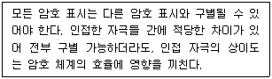
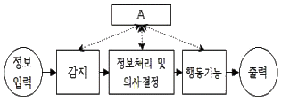
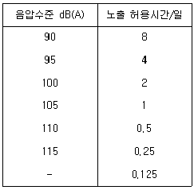
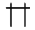
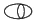

인간공학기사 (2020-08-22 기출문제)
1과목: 인간공학개론
1. 회전운동을 하는 조종장치의 레버를 40° 움직였을 때 표시장치의 커서는 3cm 이동하였다. 레버의 길이가 15cm 일 때 이 조종장치의 C/R비는 약 얼마인가?
- 2.62
- 3.49
- 8.33
- 10.48
(정답률: 68%)

2. 사용자의 기억 단계에 대한 설명으로 옳은 것은?
- 잔상은 단기기억(Short-team memory)의 일종이다.
- 인간의 단기기억(Short-team memory) 용량은 유한하다.
- 장기기억을 작업기억(Working memory) 이라고도 한다.
- 정보를 수초동안 기억하는 것을 장기기억(Long-team memory) 이라 한다.
(정답률: 91%)
3. 정량적 표시장치(Quantitative display)에 대한 설명으로 옳지 않은 것은?
- 시력이 나쁜 사람이나 조명이 낮은 환경에서 계기를 사용할 때는 눈금단위(Scale unit) 길이를 크게 하는 편이 좋다.
- 기계식 표시장치에는 원형, 수평형, 수직형 등의 아날로그 표시장치와 디지털 표시장치로 구분된다.
- 아날로그 표시장치의 눈금단위(Scale unit) 길이는 정상 가시거리를 기준으로 정상 조명 환경에서는 1.3mm 이상이 권장된다.
- 아날로그 표시장치는 눈금이 고정되고 지침이 움직이는 동목(Moving scale)형과 지침이 고정되고 눈금이 움직이는 동침(Moving pointer)형으로 구분된다.
(정답률: 85%)
4. 작업장에서 인간공학을 적용함으로써 얻게 되는 효과를 볼 수 없는 것은?
- 회사의 생산성 증가
- 작업손실 시간의 감소
- 노·사간의 신뢰성 저하
- 건강하고 안전한 작업조건 마련
(정답률: 95%)
5. 다음 중 기능적 인체치수(Functional body dimension) 측정에 대한 설명으로 가장 적합한 것은?
- 앉은 상태에서만 측정하여야 한다.
- 5~95%tile에 대해서만 정의된다.
- 신체 부위의 동작범위를 측정하여야 한다.
- 움직이지 않는 표준자세에서 측정하여야 한다.
(정답률: 88%)
6. 음의 한 성분이 다른 성분의 청각감지를 방해하는 현상은?
- 은폐효과
- 밀폐효과
- 소멸효과
- 도플러효과
(정답률: 93%)
7. 조종장치에 대한 설명으로 옳은 것은?
- C/R비가 크면 민감한 장치이다.
- C/R비가 작은 경우에는 조종장치의 조정시간이 적게 필요하다.
- C/R비가 감소함에 따라 이동시간은 감소하고, 조종시간은 증가한다.
- C/R비는 반응장치의 움직인 거리를 조종장치의 움직인 거리로 나눈 값이다.
(정답률: 71%)
8. 연구 자료의 통계적 분석에 대한 설명으로 옳지 않은 것은?
- 최빈값은 자료의 중심 경향을 나타낸다.
- 분산은 자료의 퍼짐 정도를 나타내 주는 척도이다.
- 상관계수 값 +1은 두 변수가 부의 상관 관계임을 나타낸다.
- 통계적 유의수준 5%는 100번 중 5번 정도는 판단을 잘못하는 확률을 뜻한다.
(정답률: 64%)
9. 시각적 표시장치와 청각적 표시장치 중 청각적 표시장치를 사용하는 것이 더 유리한 경우는?
- 수신장소가 너무 시끄러운 경우
- 직무상 수신자가 한곳에 머무르는 경우
- 수신자의 청각 계통이 과부하 상태일 경우
- 수신장소가 너무 밝거나 암조응이 요구될 경우
(정답률: 92%)
10. 신호검출이론(SDT)에서 신호의 유무를 판별함에 있어 4가지 반응 대안에 해당하지 않는 것은?
- 긍정(Hit)
- 누락(Miss)
- 채택(Acceptation)
- 허위(False alarm)
(정답률: 81%)
11. 암조응(Dark adaptation)에 대한 설명으로 옳은 것은?
- 적색 안경은 암조응을 촉진한다.
- 어두운 곳에서는 주로 원추세포에 의하여 보게 된다.
- 완전한 암조응을 위해 보통 1~2분 정도의 시간이 요구된다.
- 어두운 곳에 들어가면 눈으로 들어오는 빛을 조절하기 위하여 동공이 축소된다.
(정답률: 66%)
12. 다음에서 설명하고 있는 것은?

- 암호의 검출성(Detectability)
- 암호의 양립성(Compatibility)
- 암호의 표준화(Standardization)
- 암호의 변별성(Discriminability)
(정답률: 85%)
13. 다음 그림은 Sanders와 McCormick이 제시한 인간-기계 통합 체계의 인간 또는 기계에 의해서 수행되는 기본 기능의 유형이다. 그림의 A부분에 가장 적합한 것은?

- 통신
- 정보수용
- 정보보관
- 신체제어
(정답률: 84%)
14. 인간공학적 설계에서 사용하는 양립성(Compatibility)의 개념 중 인간이 사용한 코드와 기호가 얼마나 의미를 가진 것인가를 다루는 것은?
- 개념적 양립성
- 공간적 양립성
- 운동 양립성
- 양식 양립성
(정답률: 87%)
15. 지하철이나 버스의 손잡이 설치 높이를 결정하는데 적용하는 인체치수 적용원리는?
- 평균치 원리
- 최소치 원리
- 최대치 원리
- 조절식 원리
(정답률: 83%)
16. 시스템의 평가척도 유형으로 볼 수 없는 것은?
- 인간 기준(Numan criteria)
- 관리 기준(Management criteria)
- 시스템 기준(System-descriptive criteria)
- 작업성능 기준(Task performance criteria)
(정답률: 46%)
17. 실현 가능성이 같은 N개의 대안이 있을 때 총 정보량(H)을 구하는 식으로 옳은 것은?
- H = log N2
- H = log2 N
- H = 2 log2 N2
- H = log 2N
(정답률: 94%)
18. 인간의 후각 특성에 대한 설명으로 옳지 않은 것은?
- 훈련을 통하면 식별 능력을 향상시킬 수 있다.
- 특정한 냄새에 대한 절대적 식별 능력은 떨어진다.
- 후각은 특정 물질이나 개인에 따라 민감도의 차이가 있다.
- 후각은 훈련을 통하여 구별할 수 있는 일상적인 냄새의 수는 최대 7가지 종류이다.
(정답률: 88%)
19. 작업 중인 프레스기로부터 50m 떨어진 곳에서 음압을 측정한 결과 음압 수준이 100dB이었다면, 100m 떨어진 곳에서의 음압수준은 약 몇 dB 인가?
- 90
- 92
- 94
- 96
(정답률: 50%)
20. 종이의 반사율이 70%이고, 인쇄된 글자의 반사율이 15%일 경우 대비(Contrast)는?
- 15%
- 21%
- 70%
- 79%
(정답률: 64%)
2과목: 작업생리학
21. 물체가 정적 평형상태(Static equilibrium)를 유지하기 위한 조건으로 작용하는 모든 힘의 총합과 외부 모멘트의 총합이 옳은 것은?
- 힘의 총합 : 0, 모멘트의 총합 : 0
- 힘의 총합 : 1, 모멘트의 총합 : 0
- 힘의 총합 : 0, 모멘트의 총합 : 1
- 힘의 총합 : 1, 모멘트의 총합 : 1
(정답률: 82%)
22. 전신의 생리적 부담을 측정하는 척도로 가장 적절한 것은?
- 뇌전도(EEG)
- 산소소비량
- 근전도(EMG)
- Flicker 테스트
(정답률: 71%)
23. 최대산소소비능력(Maximum Aerobic Power; MAP)에 대한 설명으로 옳은 것은?
- MAP는 실제 작업현장에서 작업 시 측정한다.
- 젊은 여성의 MAP는 남성의 40~50% 정도이다.
- MAP란 산소 소비량이 최대가 되는 수준을 의미한다.
- MAP는 개인의 운동역량을 평가하는데 널리 활용된다.
(정답률: 65%)
24. 교대작업 운영의 효율적인 방법으로 볼 수 없는 것은?
- 고정적이거나 연속적인 야간근무 작업은 줄인다.
- 교대일정은 정기적이고 작업자가 예측 가능하도록 해 주어야 한다.
- 교대작업은 주간근무→야간근무→저녁근무→주간근무 식으로 진행해야 피로를 빨리 회복할 수 있다.
- 2교대 근무는 최소화하며, 1일 2교대 근무가 불가피한 경우에는 연속 근무일이 2~3일이 넘지 않도록 한다.
(정답률: 95%)
25. 생리적 측정을 주관적 평점등급으로 대체하기 위하여 개발된 평가척도는?
- Fitts Scale
- Likert Scale
- Gerg Scale
- Borg-RPE Scale
(정답률: 75%)
26. 시각연구에 오랫동안 사용되어 왔으며 망막의 함수로 정신피로의 척도에 사용되는 것은?
- 부정맥
- 뇌파(EFG)
- 전기피부반응(GSR)
- 점멸융합주파수(VFF)
(정답률: 93%)
27. 광도와 거리를 이용하여 조도를 산출하는 공식으로 옳은 것은?
- 조도 = 광도/거리
- 조도 = 광도/거리2
- 조도 = 거리/ 광도
- 조도 = 거리/광도2
(정답률: 89%)
28. 육체적으로 격렬한 작업 시 충분한 양의 산소가 근육활동에 공급되지 못해 근육에 축적되는 것은?
- 젖산
- 피루브산
- 글리코겐
- 초성포도산
(정답률: 94%)
29. K작업장에서 근무하는 작업자가 90dB(A)에 6시간, 95 dB(A)에 2시간 동안 노출되었다. 음압수준별 허용시간이 다음 표와 같을 때 소음 노출지수(%)는 얼마인가?

- 55%
- 85%
- 1⑤%
- 125%
(정답률: 79%)
30. 조명에 관한 용어의 설명으로 옳지 않은 것은?
- 조도는 광도에 비례하고, 광원으로부터의 거리의 제곱에 반비례한다.
- 휘도는 단위 면적당 표면에 반사 또는 방출되는 빛의 양을 의미한다.
- 조도는 점광원에서 어떤 물체나 표면에 도달하는 빛의 양을 의미한다.
- 광도(Luminous intensity)는 단위 입체각 당 물체나 표면에 도달하는 광속으로 측정하며, 단위는 램버트(Lambert)이다.
(정답률: 68%)
31. 어떤 작업자에 대해서 미국 직업안전위생관리국(OSHA)에서 정한 허용소음노출의 소음수준이 130%로 계산되었다면 이 때 8시간 시간가중평균(TWA)값은 약 얼마인가?
- 89.3 dB(A)
- 90.7 dB(A)
- 91.9 dB(A)
- 92.5 dB(A)
(정답률: 48%)
32. 척추동물의 골격근에서 1개의 운동신경이 지배하는 근섬유군을 무엇이라 하는가?
- 신경섬유
- 운동단위
- 연결조직
- 근원섬유
(정답률: 57%)
33. 관절의 움직임 중 모음(내전, Adduction)을 설명한 것으로 옳은 것은?
- 정중면 가까이로 끌어 들이는 운동이다.
- 신체를 원형으로 또는 원추형으로 돌리는 운동이다.
- 굽혀진 상태를 해부학적 자세로 되돌리는 운동이다.
- 뼈의 긴축을 중심으로 제자리에서 돌아가는 운동이다.
(정답률: 75%)
34. 격심한 작업활동 중에 혈류분포가 가장 높은 신체 부위는?
- 뇌
- 골격근
- 피부
- 소화기관
(정답률: 86%)
35. 전신 진동에 있어 안구에 공명이 발생하는 진동수의 범위로 가장 적합한 것은?
- 8~12 Hz
- 10~20 Hz
- 20~30 Hz
- 60~90 Hz
(정답률: 68%)
36. 근육의 수축원리에 관한 설명으로 옳지 않은 것은?
- 근섬유가 수축하면 I대와 H대가 짧아진다.
- 액틴과 미오신 필라멘트의 길이는 변하지 않는다.
- 최대로 수축했을 때는 Z선이 A대에 맞닿는다.
- 근육 전체가 내는 힘은 비활성화된 근섬유수에 의해 결정된다.
(정답률: 65%)
37. 해부학적 자세를 기준으로 신체를 좌우로 나누는 면(Plane)은?
- 횡단면
- 시상면
- 관상면
- 전두면
(정답률: 72%)
38. 정적 근육 수축이 무한하게 유지될 수 있는 최대자율수축(MVC)의 범위는?
- 10% 미만
- 25% 미만
- 40% 미만
- 50% 미만
(정답률: 71%)
39. 인간과 주위와의 열교환 과정을 올바르게 나타낸 열균형 방정식은? (단, S는 열축적, M은 대사, E는 증발, R은 복사, C는 대류, W는 한 일이다.)
- S = M – E ± R – C + W
- S = M – E - R ± C + W
- S = M – E ± R ± C - W
- S = M ± E - R ± C - W
(정답률: 79%)
40. 생명을 유지하기 위하여 필요로 하는 단위 시간당 에너지양을 무엇이라 하는가?
- 산소소비량
- 에너지소비율
- 기초대사율
- 활동에너지가
(정답률: 93%)
3과목: 산업심리학 및 관계법규
41. Herzberg의 2요인론(동기-위생이론)을 Maslow의 욕구단계설과 비교하였을 때, 동기요인과 거리가 먼 것은?
- 존경 욕구
- 안전 욕구
- 사회적 욕구
- 자아실현 욕구
(정답률: 68%)
42. 직무 행동의 결정요인이 아닌 것은?
- 능력
- 수행
- 성격
- 상황적 제약
(정답률: 62%)
43. 결함나무분석(Fault Tree Analysis; FTA)에 대한 설명으로 옳지 않은 것은?
- 고장이나 재해요인의 정성적 분석 뿐만 아니라 정량적 분석이 가능하다.
- 정성적 결함나무를 작성하기 전에 정상사상(Top event)이 발생할 확률을 계산한다.
- “사건이 발생하려면 어떤 조건이 만족되어야 하는가?”에 근거한 연역적 접근방법을 이용한다.
- 해석하고자 하는 정상사상(Top event) 기본사상(Basic event)과의 인과관계를 도식화하여 나타낸다.
(정답률: 63%)
44. 버드의 신연쇄성이론에서 불안전한 상태와 불안전한 행동의 근원적 원인은?
- 작업(Media)
- 작업자(Man)
- 기계(Machine)
- 관리(Management)
(정답률: 55%)
45. 부주의의 발생원인과 이를 없애기 위한 대책의 연결이 옳지 않은 것은?
- 내적원인- 적성배치
- 정신적 원인 – 주의력 집중 훈련
- 기능 및 작업적 원인 – 안전의식 제고
- 설비 및 환경적 원인 – 표준작업 제도의 도입
(정답률: 75%)
46. 중복형태를 갖는 2인 1조 작업조의 신뢰도가 0.99 이상이어야 한다면 기계를 조종하는 임무를 수행하기 위해 한 사람이 갖는 신뢰도의 최댓값은 얼마인가?
- 0.99
- 0.95
- 0.90
- 0.85
(정답률: 42%)
47. 직무 스트레스의 요인 중 자신의 직무에 대한 책임 영역과 직무 목표를 명확하게 인식하지 못할 때 발생하는 요인은?
- 역할 과소
- 역할 갈등
- 역할 모호성
- 역할 과부하
(정답률: 81%)
48. 최고 상위에서부터 최하위의 단계에 이르는 모든 직위가 단일 명령권한의 라인으로 연결된 조직형태는?
- 직능식 조직
- 프로젝트 조직
- 직계식 조직
- 직계 참모 조직
(정답률: 85%)
49. 재해의 발생형태에 해당하지 않는 것은?
- 화상
- 협착
- 추락
- 폭발
(정답률: 81%)
50. 주의를 기울여 시선을 집중하는 곳의 정보는 잘 받아들여지지만 주변의 정보는 놓치기 쉽다. 이것은 주의의 어떠한 특성 때문인가?
- 주의의 선택성
- 주의의 변동성
- 주의의 연속성
- 주의의 방향성
(정답률: 36%)
51. 인간행동에 대한 Rasmussen의 분류에 해당되지 않는 것은?
- 숙련기반 행동(Skill-based behavior)
- 규칙기반 행동(Rule-based behavior)
- 능력기반 행동(Ability-based behavior)
- 지식기반 행동(Knowledge-based behavior)
(정답률: 79%)
52. 연평균 작업자수가 2,000명인 회사에서 1년에 중상해 1명과 경상해 1명이 발생하였다. 연천인률은 얼마인가?
- 0.5
- 1
- 2
- 4
(정답률: 76%)
53. NIOSH의 직무스트레스 관리모형 중 중재요인(Moderatiing factors)에 해당하지 않는 것은?
- 개인적 요인
- 조직 외 요인
- 완충작용 요인
- 물리적 환경 요인
(정답률: 42%)
54. 리더십 이론 중 경로-목표이론에서 리더들이 보여주어야 하는 4가지 행동유형에 속하지 않는 것은?
- 권위적
- 지시적
- 참여적
- 성취지향적
(정답률: 56%)
55. 하인리히의 사고예방 대책의 5가지 기본원리를 순서대로 올바르게 나열한 것은?
- 사실의 발견 → 안전조직 → 분석평가 → 시정책 선정 → 시정책 적용
- 안전조직 → 사실의 발견 → 분석평가 → 시정책 선정 → 시정책 적용
- 안전조직 → 분석평가 → 사실의 발견 → 시정책 선정 → 시정책 적용
- 사실의 발견 → 분석평가 → 안전조직 → 시정책 선정 → 시정책 적용
(정답률: 68%)
56. 헤드십(Headship)과 리더십에 대한 설명으로 옳지 않은 것은?
- 헤드십은 부하와의 사회적 간격이 넓다.
- 리더십에서 책임은 리더와 구성원 모두에게 있다.
- 리더십에서 구성원과의 관계는 개인적인 영향에 따른다.
- 헤드십은 권한부여가 구성원으로부터 동의에 의한 것이다.
(정답률: 74%)
57. 제조물 책임법령상 제조업자가 제조물에 대해 충분한 설명, 지시, 경고 등 정보를 제공하지 않아 피해가 발생하였다면 이것은 어떤 결함 때문인가?
- 표시상의 결함
- 제조상의 결함
- 설계상의 결함
- 고지의무의 결함
(정답률: 79%)
58. 인간의 정보처리 과정 측면에서 분류한 휴먼 에러(Human error)에 해당하는 것은?
- 생략 오류(Omission error)
- 순서 오류(Sequentila error)
- 작위 오류(Commission error)
- 의사결정 오류 (Decision Making error)
(정답률: 54%)
59. 다음 인간의 감각기관 중 신체 반응시간이 빠른 것부터 느린 순서대로 나열된 것은?
- 청각 → 시각 → 미각 → 통각
- 청각 → 미각 → 시각 → 통각
- 시각 → 청각 → 미각 → 통각
- 시각 → 미각 → 청각 → 통각
(정답률: 86%)
60. 집단간 갈등의 원인과 가장 거리가 먼 것은?
- 제한된 자원
- 조직구조의 개편
- 집단간 목표 차이
- 견해와 행동 경향 차이
(정답률: 63%)
4과목: 근골격계질환 예방을 위한 작업관리
61. 적절한 입식작업대 높이에 대한 설명으로 옳은 것은?
- 일반적으로 어깨 높이를 기준으로 한다.
- 작업자의 체격에 따라 작업대의 높이가 조정 가능하도록 하는 것이 좋다.
- 미세부품 조립과 같은 섬세한 작업일수록 작업대의 높이는 낮아야 한다.
- 일반적인 조립라인이나 기계 작업 시에는 팔꿈치 높이보다 5~10cm 높아야 한다.
(정답률: 86%)
62. NIOSH의 들기 작업 지침에서 들기 지수(LI)를 산정하는 식에서 반영되는 변수가 아닌 것은?
- 표면계수
- 수평계수
- 빈도계수
- 비대칭계수
(정답률: 78%)
63. 사람이 행하는 작업을 기본 동작으로 분류하고, 각 기본 동작들은 동작의 성질과 조건에 따라 이미 정해진 기준 시간을 적용하여 전체 작업의 정미시간을 구하는 방법은?
- PTS 법
- Rating 법
- Therblig 법
- Work Sampling 법
(정답률: 70%)
64. 공정도(Process chart)에 사용되는 기호와 명칭이 잘못 연결된 것은?
- : 운반
- : 검사
- : 가공
- : 저장
(정답률: 82%)
65. 다음 근골격계질환의 발생원인 중 작업요인이 아닌 것은?
- 작업강도
- 작업자세
- 직무만족도
- 작업의 반복도
(정답률: 88%)
66. 산업안전보건법령상 근골격계부담작업의 유해요인조사를 해야 하는 상황이 아닌 것은?
- 법에 따른 건강진단 등에서 근골격계질환자가 발생한 경우
- 근골격계부담작업에 해당하는 기존의 동일한 설비가 도입된 경우
- 근골격계부담작업에 해당하는 업무의 양과 작업공정 등 작업환경이 바뀐 경우
- 작업자가 근골격계질환으로 관련 법령에 따라 업무상 질환으로 인정받는 경우
(정답률: 84%)
67. 근골격계질환 예방·관리프로그램 실행을 위한 보건관리자의 역할로 볼 수 없는 것은?
- 사업장 특성에 맞게 근골격계질환의 예방·관리 추짐팀을 구성한다.
- 주기적으로 작업장을 순회하여 근골격계질환 유발공정 및 작업유해요인을 파악한다.
- 주기적인 작업자 면담을 통하여 근골격계질환 증상 호소자를 조기에 발견할 수 있도록 노력한다.
- 7일 이상 지속되는 증상을 가진 작업자가 있을 경우 지속적인 관찰, 전문의 진단의뢰 등의 필요한 조치를 한다.
(정답률: 76%)
68. 작업자-기계 작업 분석 시 작업자와 기계의 동시작업 시간이 1.8분, 기계와 독립적인 작업자의 활동시간이 2.5분, 기계만의 가동시간이 4.0분일 때, 동시성을 달성하기 위한 이론적 기계 대수는 약 얼마인가?
- 0.28
- 0.74
- 1.35
- 3.61
(정답률: 54%)
69. 문제해결 절차에 관한 설명으로 옳지 않은 것은?
- 작업방법의 분석 시에는 공정도나 시간차트, 흐름도 등을 사용한다.
- 선정된 개선안은 작업자나 관련 부서의 이해와 협조 과정을 거쳐 시행하도록 한다.
- 개선절차는 “연구대상선정 → 현 작업방법 분석 → 분석 자료의 검토 → 개선안 선정 → 개선안 도입” 순으로 이루어진다.
- 개선 분석 시 5W1H의 What은 작업 순서의 변경, Where, When, Who는 작업 자체의 제거, How는 작업의 결합 분석을 의미한다.
(정답률: 72%)
70. 동작경제(Motion economy)의 원칙에 해당하지 않는 것은?
- 가능한 기본동작의 수를 많이 늘린다.
- 공구의 기능을 결합하여 사용하도록 한다.
- 두 손의 동작은 같이 시작하고 같이 끝나도록 한다.
- 공구, 재료 및 제어 장치는 사용 위치에 가까이 두도록 한다.
(정답률: 84%)
71. 산업안전보건법령상 사업주가 근골격계부담작업 종사자에게 반드시 주지시켜야 하는 내용에 해당되지 않는 것은?
- 근골격계부담작업의 유해요인
- 근골격계질환의 요양 및 보상
- 근골격계질환의 징후 및 증상
- 근골격계질환 발생 시의 대처 요령
(정답률: 84%)
72. 평균 관측시간이 0.9분, 레이팅 계수가 120%, 여유시간이 하루 8시간 근무시간 중에 28분으로 설정되었다면 표준 시간은 약 몇 분인가?
- 0.926
- 1.080
- 1.147
- 1.151
(정답률: 40%)
73. 손과 손목 부위에 발생하는 작업관련성 근골격계질환이 아닌 것은?
- 방아쇠 손가락(Trigger finger)
- 외상과염(Lateral epicondylitis)
- 가이언 증후군(Canal of guyon)
- 수근관 증후군(Carpal tunnel syndrome)
(정답률: 81%)
74. 근골격계질환 예방을 위한 바람직한 관리적 개선 방안으로 볼 수 없는 것은?
- 규칙적이고 적절한 휴식을 통하여 피로의 누적을 예방한다.
- 작업 확대를 통하여 한 작업자가 할 수 있는 일의 다양성을 넓힌다.
- 전문적인 스트레칭과 체조 등을 교육하고 작업 중 수시로 실시하도록 유도한다.
- 중량물 운반 등 특정 작업에 적합한 작업자를 선별하여 상대적 위험도를 경감시킨다.
(정답률: 68%)
75. 상완, 전완, 손목을 그룹을 A로 목, 상체, 다리를 그룹 B로 나누어 측정, 평가하는 유행인의 평가기법은?
- RULA(Rapid Upper Limb Assessment)
- REBA(Rapid Entire Body Assessment)
- OWAS(Ovako Working Posture Analysis System)
- NIOSH 들기작업지침(Revised NIOSH Lifting Equation)
(정답률: 74%)
76. 서블릭(Therblig) 기호의 심볼과 영문이 잘못된 것은?
- : TL

: DA
: Sh- : H
(정답률: 48%)
77. 다음 중 수행도 평가기법이 아닌 것은?
- 속도 평가법
- 합성 평가법
- 평준화 평가법
- 사이클 그래프 평가법
(정답률: 66%)
78. 파레토 원칙(Pareto princiloe : 80-20원칙)에 대한 설명으로 옳은 것은?
- 20%의 항목이 전체의 80%를 차지한다.
- 40%의 항목이 전체의 60%를 차지한다.
- 60%의 항목이 전체의 40%를 차지한다.
- 80%의 항목이 전체의 20%를 차지한다.
(정답률: 82%)
79. 다음 중 간헐적으로 랜덤한 시점에 연구대상을 순간적으로 관측하여 관측기간 동안 나타난 항목별로 차지하는 비율을 추정하는 방법은?
- Work Factor 법
- Work Sampling 법
- PTS(Predetermined Time Standards) 법
- MTM(Methods Time Measurement) 법
(정답률: 79%)
80. ECRS의 4원칙에 해당되지 않는 것은?
- Eliminate : 꼭 필요한가?
- Simplify : 단순화할 수 있는가?
- Control : 작업을 통제할 수 있는가?
- Rearrange : 작업순서를 바꾸면 효율적인가?
(정답률: 84%)